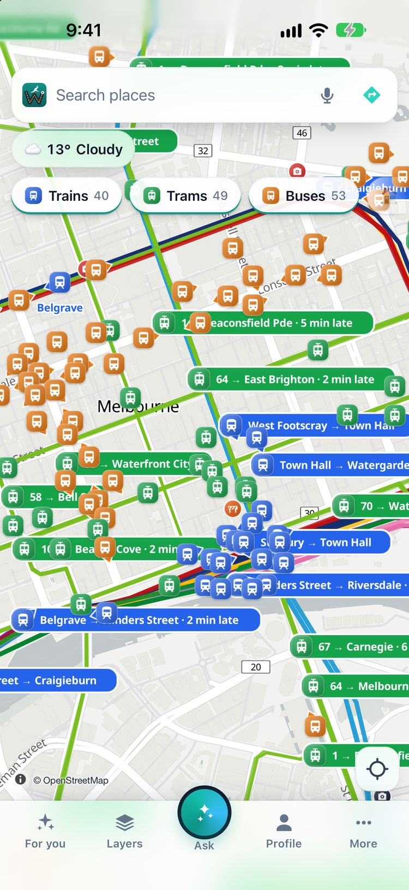

Wayaroo shows the trains, trams and buses of Melbourne moving on the map, from Transport Victoria's own live feed. Tap one to see where it is going, how late it is and its next stops.
Open the live map of MelbourneGet the iPhone app
Free. No account. It opens in your browser.

On Friday 13 November 2026 at 9:00 am (Melbourne time), Wayaroo showed 1,996 vehicles in Melbourne: 251 trains, 181 trams and 1,564 buses.
| Live on the map | Vehicles at that time |
|---|---|
| Trains | 251 |
| Trams | 181 |
| Buses | 1,564 |
The same feed covers regional Victoria. At the same time Wayaroo showed 79 vehicles in Geelong, 38 in Ballarat and 30 in Bendigo.
The numbers change through the day. Source: Transport Victoria (GTFS-Realtime, CC BY 4.0).
Plan the trip by train, tram and bus with Wayaroo's own planner, next to the car, bike and walking options. Each trip shows the Myki fare, full and concession, and the spare minutes at each change.
The fare deal Wayaroo shows here: Half-price fares on Victorian trains, trams and buses until the end of 2026 (full daily fare $5.70). Under-18s travel free. (checked on 2 November 2026; the app links to the source.)
Yes. Wayaroo shows Melbourne's trams, trains and buses moving on one map. It is free and needs no account. Open it in a browser or get the iPhone app.
Open the For you tab. Your nearest stops are at the top, with the next departures at each stop in minutes. Tap a departure to follow that tram on the map.
Yes. In Victoria the trip planner shows the Myki fare for each trip, full and concession. It also shows the fare rule now in force.
From Transport Victoria's open live feed (CC BY 4.0). Positions are usually less than a minute old. They can be late or wrong, so always check the sign at the stop.
Yes. Wayaroo is free and needs no account. Your settings stay on your phone.
Other cities: Sydney · Brisbane · Gold Coast · Adelaide · Canberra · Cairns · all cities
Wayaroo is an independent app from Ozrsym Pty Ltd. Transport Victoria does not run or endorse it. Live positions and times come from the operator's feed. They can be late or wrong. Always check the sign at the stop. Full list of sources: data credits.